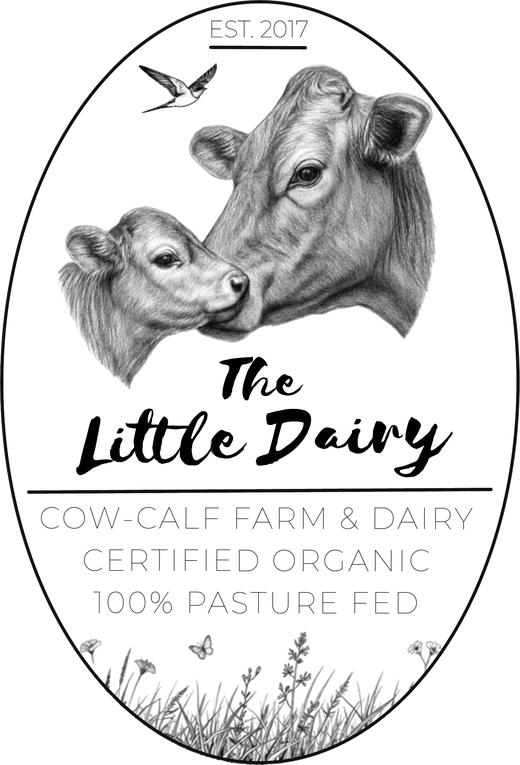

The dairy · Coming spring 2027
Milk shared between cow, calf and us
We're hoping our dairy products will be ready in spring 2027. They'll come from a small, certified organic cow-with-calf herd, where the calves stay with their mothers, the cows are milked once a day, and the calves always get their fair share.
- Cow with calf
- Milked once a day
- Weaned naturally
- Certified organic
How our dairy is different
The calves come first
Calves stay with their mothers
Every calf stays with its mother from birth, suckling and growing up alongside her in the herd.
Milked once a day
We milk once a day, so there's always plenty left for the calves. We take less milk, and the calves have their fair share.
Weaned when they're ready
Calves wean at a much more mature age, mostly between six and twelve months, depending on the relationship between each mother and her calf.
What we're hoping to make
Raw milk, yoghurt and cheese
If all our plans go ahead, we'll have raw milk available, our well-known Greek-style yoghurt, and I'm hoping to work with a local cheesemaker to provide customers with some delicious cheeses.
It will all depend on how the next few months play out. We're hoping for some good news in the new year, which would mean this all goes to plan.
A different approach
Doing things differently
On most British dairy farms, calves are separated from their mothers very soon after birth and reared by hand. A calf will usually be with its mother for anywhere from 24 hours to 7 days. Calves are then likely to be fed in a separate pen or calf shed, with whole milk from the tank or milk powder replacer, and they're usually weaned off that at about 6 to 8 weeks, or 12 weeks on organic farms. Those are just a few of the differences.
On the surface, my system produces an average of 7 litres per cow per day, compared with 30 to 40 litres per cow per day in a conventional system. So people ask: how is a system like mine supposed to feed the world? Well, here's my answer.
It's not my job to feed the world. It's my job to provide nutrition to my local community, for those who want it, and to steward the land in the best way I can, providing a place for nutritious food production, looked after in a way that lets nature flourish at the same time.
Coming spring 2027
Be the first to hear
Small batches from a small herd. If you'd like to hear when our dairy products are ready, get in touch and I'll let you know.